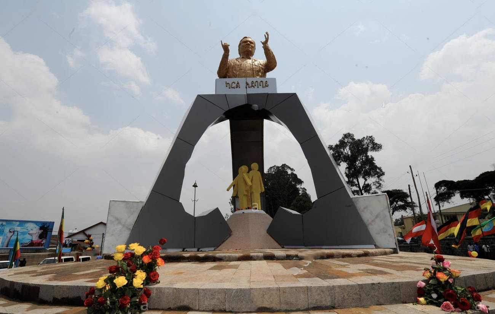
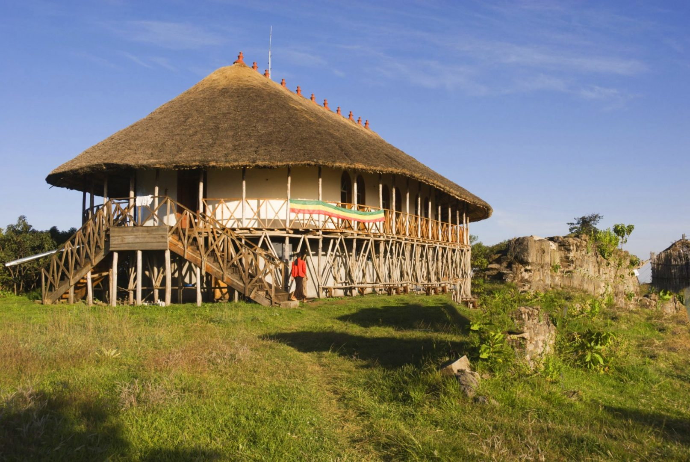

The Holy Trinity Cathedral
The Holy trinity Cathedral is one of the must-see visit in Addis Ababa.
Entoto Mariyam Church
Located on top of Entoto Hill, Maryam Church is a must see if ever you will be in Addis Ababa.

Arada Giyorgis
Arada Giyorgis the closest landmark to the center of Addis Ababa.

Washa Miakel
Washa Miakel is one of the oldest and the 5th century AD rock hewn church on the suburb of Addis Ababa.

Anwar Mosque
Welcome to the largest iconic and oldest mosque of Addis Ababa.

Tewodros
Tewodros square is a place to see the Replica of the first cannon made in Ethiopia by Emperor Tewodros.

Menelik Square
Menelik II Square is located in the heart of Addis Ababa, the area locally known as Arada. At the center of the square stands a magnificent equestrian statue of the Emperor.

The Lion of Judah
The monument to the Lion of Judah is a statue of the Lion of Judah, symbol of Ethiopian Emperors and Ethiopia is located in Addis Ababa.
Yekatit 12 Square
The Yekatit 12 Square is a monument in Addis Ababa around sedist kilo

Victory monument / Miyazia 27 Square
This victory monument is located at Queen Elizabeth and Development through Cooperation Avenues at Arat Kilo, and commemorates the victory of the Ethiopians over the Italians in 1941.

Karl Square
Karl square is one of the squares dedicated to non-Ethiopians who has a profound positive impact on Ethiopia.

Tigilachin (Our Struggle) monument
The Tigilachin square is one of the best memorials of the communist regime of Ethiopia

Addis Ababa Museum
Addis Ababa museum is one of the public museums in the city.

Bilalul Habeshi Museum
Bilul Al-Habeshi is one of the first and boutique Islamic museum of Ethiopia.

Ethnography Museum
The ethnographic museum of Addis Ababa gives a wide variety of history of Ethiopia and offers you the chance to see the Lavish lifestyle of Emperor Haile Selassie.

The National Museum of Ethiopia
The collection of The National museum of Ethiopia is ranked among the most important in sub-Saharan Africa.

Zoma Museum
This is one of the unique and mesmerizing museum in Addis Ababa.

Melka Kunture archeological site
Melka kuntre is one of the active archeological site near the vicinity of the capital Addis Ababa.

Tiya Stelae Field
Tiya Stelae Field is a UNESCO inscribed archaeological Site in Southern Ethiopia!

Adadi Maryam cave church
Adadi Mariam is the southernmost rock-hewn church of Ethiopia.

Menagesha
Dubbed to be the oldest park in Africa, Menagesha has been a state forest since 15 century AD.

Ankober
Ankober is an ideal day trip spot for visitors who needs to mix culture and nature.

Bishoftu
Bishoftu is the nearest best resort town to Addis Ababa.

Wonchi Crater Lake
Wonchi is one of the most beautiful lake crater lake of Ethiopia.

Debere Libanos Monastery and the Jemma River Valley
Debere Libanos is one of few churches of Ethiopian Orthodox church that has served as a seat of the head of the church.